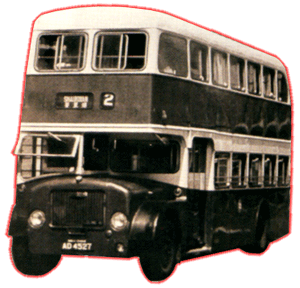

Dennis
- Loline
III
 |
車隊編號 Model 引擎 Engine 容積 Engine Capacity 波箱 Gearbox 車身 Body Build 體積 Volume 載客量 Passenger 服役年份 Year |
: LW 1 : Gardner 6LW (135bhp) : 不詳 : 4-Speed Semi-automatic Gearbox : Northern Counties : 9144L X 2438W X 4115H(mm) : U43 L32 S14 : 1962 - 1978 |
這部被稱為 [中華之寶] 的 Dennis Loline III [丹尼士羅拉三型]雙層巴士，擁有多個 "第一" 的紀錄。它是香港島，也就是中巴的第一輛雙層巴士 ; 它又是全香港的第一部 [丹尼士] 製造的雙層巴士 ; 它更是第一部安裝 Northern Counties 車身，在香港行走的&雙層巴士。可惜中巴對新巴士之性能不太滿意，最終把第二部新巴士的訂單合約取消。雖然當年社會輿論對港島採用雙層巴士，曾引起一番爭論，幸好最後都能夠成功服役。